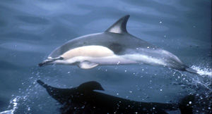
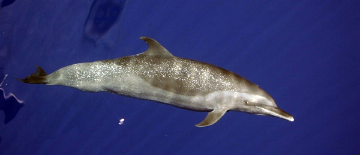

Table of Contents:
- What is a Dolphin
- Etymology
- Hybridization
- Evolution
- Anatomy
What is a Dolphin
A dolphin is an aquatic mammal within the infraorder Cetacea. Dolphin species belong to the families Delphinidae (the oceanic dolphins), Platanistidae (the Indian river dolphins), Iniidae (the New World river dolphins), Pontoporiidae (the brackish dolphins), and the extinct Lipotidae (baiji or Chinese river dolphin). There are 40 extant species named as dolphins. Dolphins range in size from the 1.7-metre-long (5 ft 7 in) and 50-kilogram (110-pound) Maui's dolphin to the 9.5 m (31 ft 2 in) and 10-tonne (11-short-ton) orca. Various species of dolphins exhibit sexual dimorphism where the males are larger than females. They have streamlined bodies and two limbs that are modified into flippers. Though not quite as flexible as seals, some dolphins can briefly travel at speeds of 29 kilometres (18 mi) per hour or leap about 30 feet (9.1 m).[1] Dolphins use their conical teeth to capture fast-moving prey. They have well-developed hearing which is adapted for both air and water. It is so well developed that some can survive even if they are blind. Some species are well adapted for diving to great depths. They have a layer of fat, or blubber, under the skin to keep warm in the cold water. Dolphins are widespread. Most species prefer the warm waters of the tropic zones, but some, like the right whale dolphin, prefer colder climates. Dolphins feed largely on fish and squid, but a few, like the orca, feed on large mammals such as seals. Male dolphins typically mate with multiple females every year, but females only mate every two to three years. Calves are typically born in the spring and summer months and females bear all the responsibility for raising them. Mothers of some species fast and nurse their young for a relatively long period of time. Dolphins produce a variety of vocalizations, usually in the form of clicks and whistles. Dolphins are sometimes hunted in places such as Japan, in an activity known as dolphin drive hunting. Besides drive hunting, they also face threats from bycatch, habitat loss, and marine pollution. Dolphins have been depicted in various cultures worldwide. Dolphins occasionally feature in literature and film, as in the film series Free Willy. Dolphins are sometimes kept in captivity and trained to perform tricks. The most common dolphin species in captivity is the bottlenose dolphin, while there are around 60 orcas in captivity.
This is a common dolphin
Etymology
The name is originally from Greek δελφίς (delphís), "dolphin",[2] which was related to the Greek δελφύς (delphus), "womb".[2] The animal's name can therefore be interpreted as meaning "a 'fish' with a womb".[3] The name was transmitted via the Latin delphinus[4] (the romanization of the later Greek δελφῖνος – delphinos[2]), which in Medieval Latin became dolfinus and in Old French daulphin, which reintroduced the ph into the word "Dolphin". The term mereswine (that is, "sea pig") has also historically been used.[5] The term 'dolphin' can be used to refer to most species in the family Delphinidae (oceanic dolphins) and the river dolphin families Iniidae (South American river dolphins), Pontoporiidae (La Plata dolphin), Lipotidae (Yangtze river dolphin) and Platanistidae (Ganges river dolphin and Indus river dolphin).[6][7] This term has often been applied in the US, mainly in the fishing industry, to all small cetaceans (dolphins and porpoises) are considered to be porpoises,[8] while the fish dorado is called dolphin fish.[9] In common usage the term 'whale' is used only for the larger cetacean species,[10] while the smaller ones with a beaked or longer nose are considered 'dolphins'.[11] The name 'dolphin' is used casually as a synonym for bottlenose dolphin, the most common and familiar species of dolphin.[12] There are six species of dolphins commonly thought of as whales, collectively known as blackfish: the orca, the melon-headed whale, the pygmy killer whale, the false killer whale, and the two species of pilot whales, all of which are classified under the family Delphinidae and qualify as dolphins.[13] Although the terms 'dolphin' and 'porpoise' are sometimes used interchangeably, 'porpoise' usually refers to the Phocoenidae family, which have a shorter beak and spade-shaped teeth and differ in their behavior.[12] A group of dolphins is called a "school" or a "pod". Male dolphins are called "bulls", females called "cows" and young dolphins are called "calves".[14]

This is a bottlenose dolphin
Hybridization
In 1933, three hybrid dolphins beached off the Irish coast; they were hybrids between Risso's and bottlenose dolphins.[15] This mating was later repeated in captivity, producing a hybrid calf. In captivity, a bottlenose and a rough-toothed dolphin produced hybrid offspring.[16] A common-bottlenose hybrid lives at SeaWorld California.[17] Other dolphin hybrids live in captivity around the world or have been reported in the wild, such as a bottlenose-Atlantic spotted hybrid.[18] The best known hybrid is the wolphin, a false killer whale-bottlenose dolphin hybrid. The wolphin is a fertile hybrid. Two wolphins currently live at the Sea Life Park in Hawaii; the first was born in 1985 from a male false killer whale and a female bottlenose. Wolphins have also been observed in the wild.[19]

This is a dusky dolphin
Evolution
Dolphins display convergent evolution with fish and aquatic reptiles. Dolphins are descendants of land-dwelling mammals of the artiodactyl order (even-toed ungulates). They are related to the Indohyus, an extinct chevrotain-like ungulate, from which they split approximately 48 million years ago.[20][21] The primitive cetaceans, or archaeocetes, first took to the sea approximately 49 million years ago and became fully aquatic by 5–10 million years later.[22] Archaeoceti is a parvorder comprising ancient whales. These ancient whales are the predecessors of modern whales, stretching back to their first ancestor that spent their lives near (rarely in) the water. Likewise, the archaeocetes can be anywhere from near fully terrestrial, to semi-aquatic to fully aquatic, but what defines an archaeocete is the presence of visible legs or asymmetrical teeth.[23][24][25][26] Their features became adapted for living in the marine environment. Major anatomical changes include the hearing set-up that channeled vibrations from the jaw to the earbone which occurred with Ambulocetus 49 million years ago, a streamlining of the body and the growth of flukes on the tail which occurred around 43 million years ago with Protocetus, the migration of the nasal openings toward the top of the cranium and the modification of the forelimbs into flippers which occurred with Basilosaurus 35 million years ago, and the shrinking and eventual disappearance of the hind limbs which took place with the first odontocetes and mysticetes 34 million years ago.[27][28][29] The modern dolphin skeleton has two small, rod-shaped pelvic bones thought to be vestigial hind limbs. In October 2006, an unusual bottlenose dolphin was captured in Japan; it had small fins on each side of its genital slit, which scientists believe to be an unusually pronounced development of these vestigial hind limbs.[30] Today, the closest living relatives of cetaceans are the hippopotamuses; these share a semi-aquatic ancestor that branched off from other artiodactyls some 60 million years ago.[31] Around 40 million years ago, a common ancestor between the two branched off into cetacea and anthracotheres; anthracotheres became extinct at the end of the Pleistocene two-and-a-half million years ago, eventually leaving only one surviving lineage: the two species of hippo.[32][33]
This is a spotted dolphin
Anatomy
The anatomy of a dolphin showing its skeleton, major organs, tail and body shape. Dolphins have torpedo-shaped bodies with generally non-flexible necks, limbs modified into flippers, a tail fin, and bulbous heads. Dolphin skulls have small eye orbits, long snouts, and eyes placed on the sides of its head; they lack external ear flaps. Dolphins range in size from the 1.7 m (5 ft 7 in) long and 50 kg (110 lb) Maui's dolphin to the 9.5 m (31 ft 2 in) and 10 t (11 short tons) orca. Overall, they tend to be dwarfed by other Cetartiodactyls. Several species have female-biased sexual dimorphism, with the females being larger than the males.[34][35] Dolphins have conical teeth, as opposed to porpoises' spade-shaped teeth. These conical teeth are used to catch swift prey such as fish, squid or large mammals, such as seal.[35] Breathing involves expelling stale air from their blowhole, in an upward blast, which may be visible in cold air, followed by inhaling fresh air into the lungs. Dolphins have rather small, unidentifiable spouts.[35][36] All dolphins have a thick layer of blubber, thickness varying on climate. This blubber can help with buoyancy, protection to some extent as predators would have a hard time getting through a thick layer of fat, and energy for leaner times; the primary usage for blubber is insulation from the harsh climate. Calves, generally, are born with a thin layer of blubber, which develops at different paces depending on the habitat.[35][37] Dolphins have a two-chambered stomach that is similar in structure to terrestrial carnivores. They have fundic and pyloric chambers.[38]